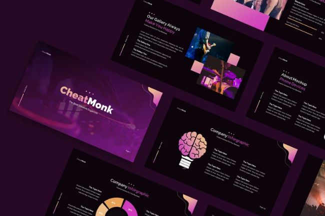
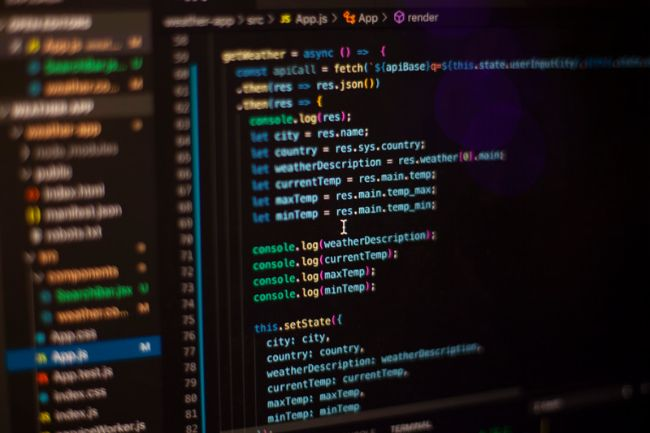

<div class="load-data">
  <div class="popup-main-content">
    <div class="container">
      <div class="blog-details">
        <div class="row">
          <div class="col-md-12">
            <div class="blog-info">
              <div class="tag mt-0">
                <span>18/Oct/2022 - Succinct clarification </span>
              </div>
              <h4 class="blog-details-title">
                Web design & Web development 🤝
              </h4>
            </div>
          </div>
          <br class="col-lg-12">
            <p class="mt-30">
              As someone who does both web design and web development, I can
              tell you that these are two very different things. Web design is
              all about the look and feel of a website. It involves creating the
              layout, choosing the colors, selecting fonts, and deciding on the
              overall aesthetic of the site. A web designer is responsible for
              making sure that the website looks great and is easy to navigate.
            </p>
            <p class="mt-30">
              On the other hand, web development is all about the functionality
              of a website. It involves coding and programming to make sure that
              the website works the way it's supposed to. A web developer is
              responsible for making sure that the website functions properly
              and that everything is working as it should.
            </p>
            <div class="row">
              <div class="col-md-6">
                
              </div>
              <div class="col-md-6">
                
              </div>
            </div>
            <div class="blockquote">
              <p>
                “ While web design and web development are different, they are
                also closely related. In fact, many web designers also have
                development skills, and vice versa. ”
              </p>
            </div>
            <!-- /blockquote -->

            <h3 class="blog-details-sec-title" >
              TOP Design Software & Coding Languages 
            </h3>
            <p class="mt-30 blog-white">
              Top 3 Design Software for Websites: </p>
              
              <p class="mt-30">1 - Adobe Photoshop - This is a
              popular software used for designing and editing images that are
              used in website design.</p>

              <p class="mt-30">2 - Sketch - This is a vector graphics editor
              that is commonly used for web design. It has many features that
              make it easy to create responsive web designs.</p> 
              <p class="mt-30">3 - Figma - This is a
              collaborative design tool that allows teams to work together on
              web designs. It has many features that make it easy to create and
              iterate on designs.</p>  </br>
              <p class="mt-30 blog-white">Top 3 Coding and Programming Languages for
              Websites: </p>
              <p class="mt-30">
              1 - HTML - This is the basic language used to create
              websites. It provides the structure and content of a web page. </p> <p class="mt-30">2 - CSS
              - This is used to style web pages and give them a unique look and
              feel. It is used in combination with HTML to create visually
              appealing websites.</p>  <p class="mt-30">3 - JavaScript - This is a programming language
              used to create interactive elements on a website. It is used to
              create animations, forms, and other interactive features that make
              a website more engaging. These design software and coding
              languages are commonly used by web designers and developers to
              create visually appealing and functional websites. </p> <p class="mt-30">However, there
              are many other tools and languages available, and the specific
              ones used will depend on the needs of the project and the
              preferences of the designer or developer.</p>
            </p>
            <p class="mt-30">
              When you're building a website, it's important to have both design
              and development skills in order to create a website that looks
              great and works well.
            </p>
            <p class="mt-30">
              If you're interested in seeing some of the projects I've worked
              on, be sure to check out the portfolio section of my website.
              There, you'll be able to see examples of both my design and
              development work, and get a sense of the types of websites I've
              worked on in the past.
            </p>
          </div>

          <div class="col-md-12">
            <div class="divider"></div>
            <!-- /divider -->
          </div>

          <div class="col-md-12">
            <div class="blog-details-nav d-flex justify-content-between">
              <div>
                <a class="blog-link" href="blog-details.html"
                  >Why I decided to go Freelance? And why you should pick me? 
                  <small>PREVIOUS POST</small></a
                >
              </div>
              <div class="text-right">
                <a class="blog-link" href="blog-details-03.html"
                  >Why UX is
                  so much important in web/app design? 
                  <small>NEXT POST</small></a
                >
              </div>
            </div>
            <!-- /portfolio-details-nav -->
          </div>
        </div>
      </div>
      <!-- /blog-details -->
    </div>
  </div>
</div>
